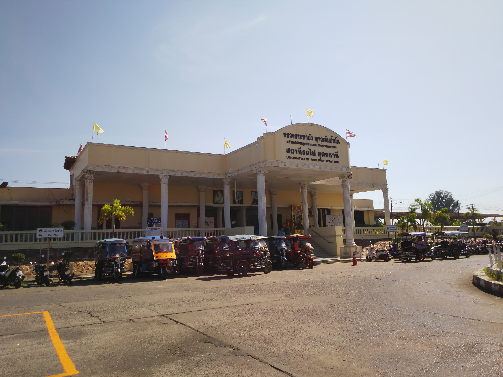
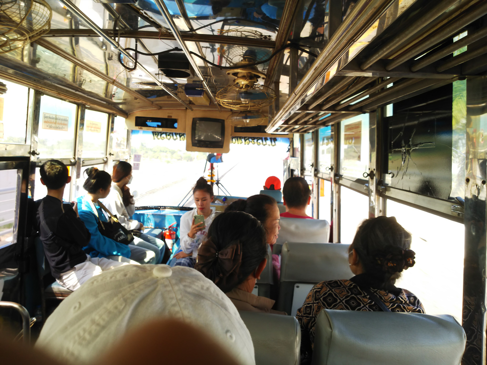

行きはパンだった機内食が、帰りはなんとサンドイ
ッチ。
食べられへんがな・・・
で、スワンナプーム空港について、さっそく夕食を。
もちろん和食の一択です。で、「トンカツ入りトン
コツラーメン」。なんでチャーシューちゃうんやろ。
トンカツとラーメン、全然あわないっす。
これ、５００バーツぐらいして、最初は昔の感覚で
１バーツ３円ちょいで計算して、まぁええかと思っ
てたんですが、よく考えたら１バーツ５円ぐらいに
なってるのでこれで２５００円越え！タイも高い！
人生最高額のラーメンです。（あとでわか ったけ
ど、この店ダントツに高い店でした）
そうそう、これまで何度かタイに行きましたが、新
しくできたこの空港は初めてです。市内まで直通す
る連絡の電車が走ってます。
で、なんと地下鉄もできていて、それに乗り換えて
やってきたのがファラムポーン駅。
今夜はこの近くのホテルです。
地下鉄も空港連絡鉄道も、ちゃんと窓口に駅員がい
て切符を窓口で買える体制でした。日本も見習えよ
・・・
明日はこの駅の始発に乗らなアカンので駅舎まで下
見に行きましたが、終電が終わったのか完全に閉ざ
されてました。
で、ホテルはフロントのおっさんのあせっててどう
やらダブルブッキング。
だいぶ待って案内された部屋はネットにあがってた
写真とは全く別のボロ部屋。文句言う元気もなく、
他のホテルに行くわけにもいかず、我慢しましたわ。
※もちろん帰国後に苦情を言って返金してもらいま
したが、２０％ぐらいしか返ってこんかった。は
らたつ！
翌朝。無事早起きして駅に到着。３：４５ぐらいで
す。
まだ閉まってます。
この人たち、徹夜してるんやろか・・・
３：５７に開きました。
ホームに入ると、保存車両が飾ってました。じっく
り見てる時間はございません。
この車両かな。ちと新しめか・・・
と思ってホームを進むと、縦列停車で前のほうに乗
る列車が停まってました。
中は古めの近郊型。
切符はＱＲ付の近代的なもの。しかし３０分以上乗
って５バーツとは激安やで。タイ鉄道、最高っす！
車両の連結部分にホロはなし。

いよいよ４：１５出発。しばらく走ると高架線になって、京阪みたいな
複々線です。
乗った列車は長距離列車なので内側を走ります。
ちなみにこのあと車内検札があって、ＱＲコードをスキャナで読みとっ
てました。
もひとつちなみに、昨日空港のローソンで買ったメロンパンをこの車内
で食べたんですが、味もメロンの味がついてました。いらんことすな！
（ⓒちゃらんぽらん富好）
５時頃にドンムンアンに到着。昔の国際空港前です。
ここから飛行機に乗りますが、まだまだ時間がある
のでしばらくホームで列車を眺めることに。
タイは夜行列車がそこそこ残ってて、これはいわゆる寝台特急。食堂車もついてました。車両は中国製だそうです。
まだまだ時間があるのに駅員に追い出され、しょう
がないので空港に移動。
早朝やのにえらい人です。国王の写真の飾られたコ
ーナーがありましたが、なにか記念の日なんかな？
さて、いよいよ国内線で北へ飛びます。
ちなみに、タイは国内線でもペットボトルを没収さ
れました。どないなっとんねん。
着いたのはウドンターニーという東北部の街。
ここから陸路でラオスを目指します。
まずは鉄道で終着駅へ。
次の列車まで２時間近くあるので、人はほとんどい
ません。
国境の駅まで１１バーツ。安いな～
なぜかこの駅の切符は英語表記っすね。
よく見ると、切符に書かれた出発時間は、発行時点
の遅れを見越した時間で印刷されてますね。すごい！
ホームは低いっすね。トイレは有料でした。 信号は腕木式や！
貨物列車が来ましたが、なんとタブレット交換して
ました。
駅前のフードコートで昼でも食べようと思いました
が、あんまり開いてなかった。こんな地方の街でも
日本食の店が複数ありました。

結局駅前のケンタッキーで昼を食べて（ここは日本
よりも安かった）駅に戻ると、列車到着が近いから
かトゥクトゥクが集まってきてました。
実はこの駅から、ラオスに直通する列車があります。バンコクからの寝台
列車とこの観光列車の２本だけ、国際列車が走ってるのですが、時間の関
係で乗れません。残念・・・
そうこうしてるとラオスからの列車が到着。
後方の車両は多分、日本の中古やね。１４系寝台っ
ぽい。
タブレット交換するような昔ながらの駅やのに、こ
んな立派な列車案内があって、何分遅れかも随時更
新されて表示されてます。
３０分遅れで到着（キレてないっすよ）
古い客車でよかった。
冷房なしの旧型客車です。
扉も開放されてます。いいよいいよ。
車内販売のおばちゃんも乗り込んでました。
４０分ほどで終着のノンカーイに到着。
けっこう乗っててビックリ。
ラオスに向う人が多いのか、国境行きのバス乗り場
まで行くトゥクトゥクがたくさん客待ちしてました。


左側の古い客車は、保存車両ではなく図書館になってるとのことです。
バス乗り場はそんなに遠くないので、歩いて行きま
す。
この奥がバス乗り場のようです。
ここからラオスのイミグレーションまで随時出てる
みたいです。
近所のおばちゃん、みたいな人が乗ってますね。
一旦、タイの出国手続きのところで降ろされます。

手続き終わったら、バスは前進してて、また同じバ
スに乗り込む、という手順です。

といってもどのバスに乗ってもいいので、客が増え
てます。
メコン川が国境線になってます。この橋の真ん中に
線路があって、国際列車は同じ橋を通るようです。
川を渡るとラオスの入国審査場。
すんなり入国できました。
その３ に続く！